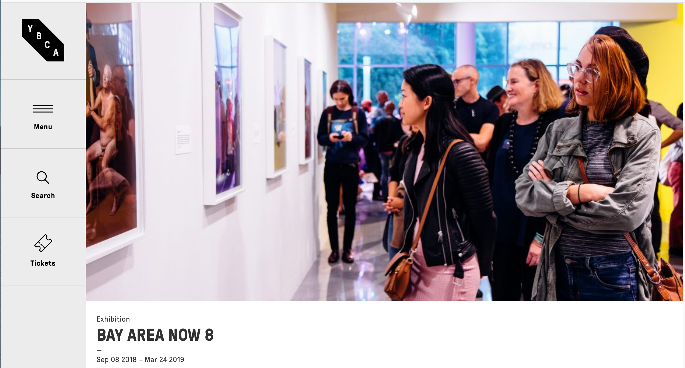
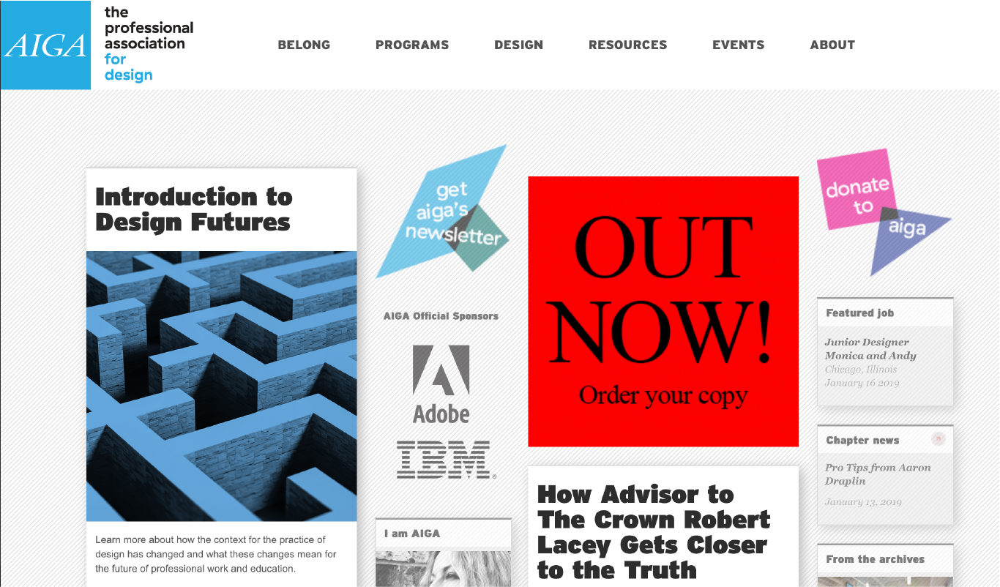

YBCA
https://www.ybca.org/
The Yerba Buena Center for the Arts (YBCA) is a non-collecting art institute encouraging communities to engage in social change through the collaboration of civic engagement and creative processes. Like Imagining America, YBCA initiates programs to develop projects directed to growing visual and performing arts by working with local advocacy groups and organizations around the Bay Area. YBCA’s goal is to be an inclusive movement meant to bring people of all cultures and ages together to solve problems and build dialogues between platforms of public affairs.
The YBCA website reflects the contemporary and innovative feel that represents the organizations identity and image. Their target audience, I would guess, is a younger demographic, but could accommodate older users as their clean and organized interface is well structured for an easy user experience. It maintains consistency page to page with a clear san serif typeface that adds legibility in larger text heavy displays. I also enjoy their use of grids and lines that separate the information on their About page. I do think that the About should be shown on the main navigation bar rather than being a subcategory under the menu option. There are a lot of subcategories below the Menu but for the purpose of keeping the main page orderly. Imagining America has a lot of information in their navigation menu so they would really benefit from a similar system that YBCA has.
Compared to Imagining America, YBCA’s interface looks up-to-date and composed with a minimal color pallet of black, white, and blue.The blue is only used on call-to-action buttons below event images and the contact information at the bottom of the page. I think that this moderation of color creates less of a distraction for the user as well as the developer when maintaining the site while accentuating the high resolution images that is used as headers for each pages. Imagining America uses too many colors to seperate information as you scroll down the screens. I understand its purpose is to makes transtions between sections identifiable, but it visually makes everything look too busy. Overall, YBCA’s site is relatively nice. It demonstrates good design practices and promotes events successfully.
AIGA
https://www.aiga.org/
The American Institute for Graphic Arts (AIGA) is one of the largest professional design organizations, providing members with the resources to grow and develop upon their craft whether through design, business, or other disciplines. AIGA’s goal is to spread the value of design around the world, promoting the tools and resources to make a global impact, however, the website itself doesn't successfully portray these qualities as it is out of date and appears to lack basic design properties. Given how this source is primarily for people in the creative field, it’s interface isn’t as well constructed as I would assume. The homepage is dense with information so it uses boxes separate its articles, newsletters, and external links laid out into messy columns. Between the columns are sponsor logos which didn’t flow with the content well. This homepage lacks hierarchy and creativity making it an underwhelming experience overall.
Unlike, YBCA, it requires users to apply for memberships in order to fully access their resources. This probably attracts a specific audience which in return limits their scope in comparison to other organizations. It’s not a hard interface to use as I do like the simplicity of the navigation bar. Being an informational site, they were challenged with organizing a lot of different types of programs within a limited amount of space. Using a horizontal navigation bar was a better design choice as it would be redundant to stack them within a single category in attempt to create space. However, the drop down menus does lack a background so the words blend into the images behind them making it difficult to read. I think Imagining America would benefit from a navigation bar like this because theirs has too many categories where it overflows to a second line. Another drawback on AIGA’s site is the lack of typographic thought. They appear to be using the default font, pairing it with a bold, condensed typeface that makes reading larger bodies harder. The lack of visual appeal of the type prevents me from wanting to read the information.
In all, I hope that at some point, AIGA would consider these simple changes. It is a very informative site that provides a lot to the community of designers.